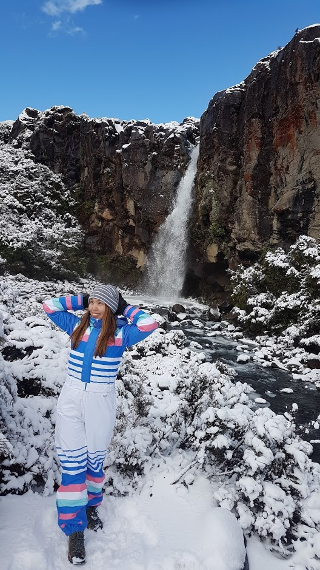

Hi, I'm Natalia
 I was born in a small place called Tashtyp in the south of Siberia. I am an aerospace and mechanical engineer based in Auckland, New Zealand. My passion is to solve problems and study new things. At present, I am a student of CS50 class, and as a part of homework, I created this website.
I got my first degree from Siberian State Aerospace University, specialty - spacecraft and upper-stage rocket. It is a six years degree, including compulsory work experience, which I passed at ISS Reshetnev, a Russian satellite manufacturing company. During the last year of study, I decided to continue my education and entered postgraduate program at AUT University, major - mechanical engineering. Hence in 2014, I moved to New Zealand, where I have been since and love the country.
Upon graduation, I started to work at Phitek Systems, a supplier of active noise-cancellation devices and headphones in the aircraft cabin. It was an amazing experience for me. I learned a lot about production and testing of connectors, headphones, and charging products for airplanes. A couple of years later, the company faced an internal reconstruction, and my role was made redundant. This brought me to my current position as a draftsperson and technical estimator in Matta Products.
I love to learn and try new things, explore the unknown. In my spare time, you will find me doing all sorts of activities: hiking, camping, paragliding, surfing, dancing, even boxing.